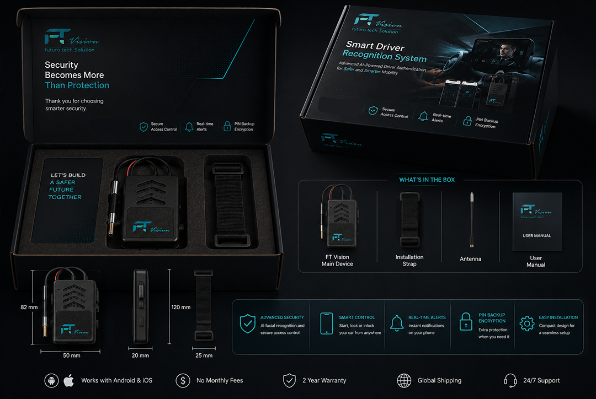
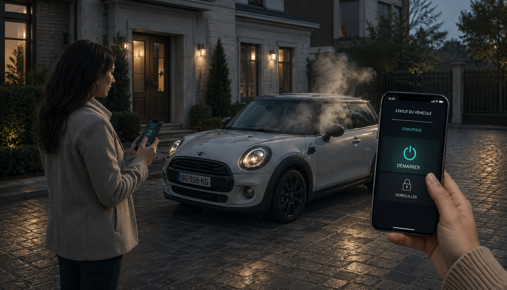
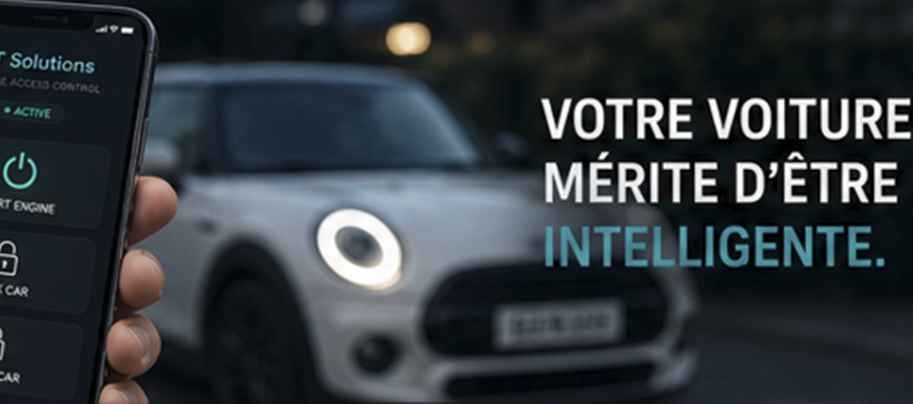
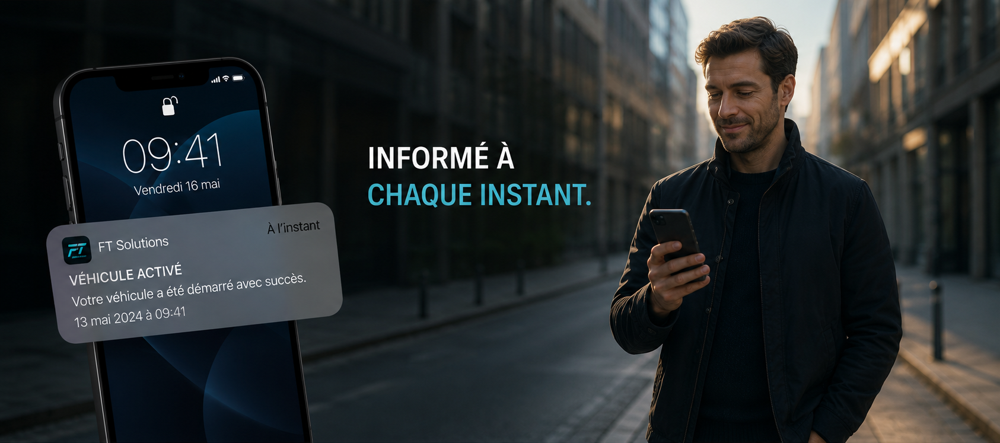

Un module compact installé en 30 minutes, connecté en permanence à votre smartphone. Démarrage, verrouillage et mode Inlock, où que vous soyez.
Étanchéité
Connectivité
Latence
Garantie

Chaque fonction répond à une situation concrète du quotidien automobile.
Le boîtier déclenche le démarrage moteur à distance, sans intervention sur le contact. Idéal les matins froids ou pour ventiler l'habitacle avant un trajet.

Le mode Inlock condamne les portes même de l'intérieur, empêchant toute ouverture non autorisée — utile en zone à risque ou lors d'un arrêt bref.

Notification instantanée en cas d'ouverture, de tentative d'accès ou de changement d'état — même quand votre téléphone est en poche.

Le module FT-01 est compatible avec la majorité des véhicules essence, diesel et hybrides commercialisés depuis 2010. En cas de doute, indiquez la marque et le modèle lors de la commande — notre support vérifie la compatibilité avant expédition.
Non, le boîtier est conçu pour un branchement simple sur le faisceau existant. Une option d'installation à domicile par un technicien agréé est toutefois disponible lors de la commande.
Le module bascule en mode local via Bluetooth pour les commandes de proximité, et se resynchronise automatiquement dès que la connexion 4G est rétablie.
Oui, la formule Pro + Inlock permet d'ajouter plusieurs profils conducteurs avec des droits d'accès configurables depuis l'application.
Livraison sous 3 à 5 jours ouvrés, installation simple, garantie 2 ans.